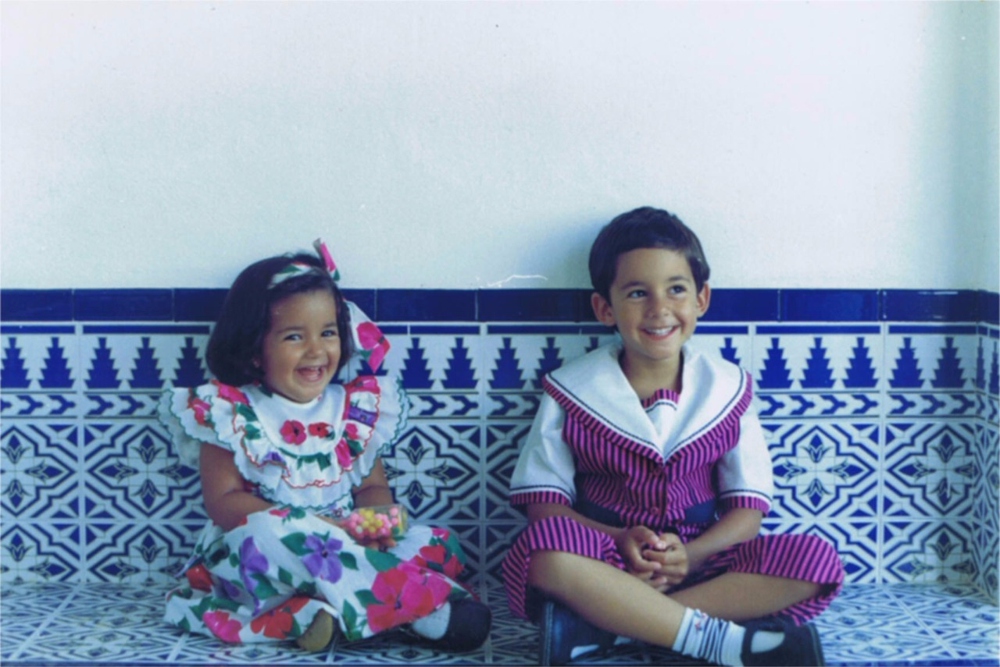

Saltar al contenido
Sobre nosotros: guías locales en Huelva
Somos Javier y Laura, dos hermanos Almonteños orgullosos de nuestras raíces y profundamente enamorados de nuestra tierra.
Tras estudiar fuera, vivir en varios países y viajar por medio mundo, siempre hemos estado orgullosos de haber nacido en una tierra con una identidad única.
A lo largo de los años hemos traído a decenas de grupos de amigos de toda España, de Portugal, de Irlanda, Reino Unido, Bélgica, Holanda, Francia, Italia, Perú, Ecuador, Venezuela, Brasil, EEUU, Australia y muchas otras partes del mundo para que conocieran lo que nosotros llamamos “casa”.
Tras tantas experiencias, hemos aprendido que un viaje inolvidable es aquel en el que te permites dedicar a cada momento el tiempo que se merece. Sentir cada instante con calma, con los cinco sentidos y con el corazón. Disfrutar de cada paisaje, cada atardecer, cada persona que se conoce, cada sorbo de vino o cada nuevo sabor que se prueba. Eso es lo que realmente convierte un viaje en una experiencia de vida.
Promovemos un turismo en que aprender a disfrutar de cada momento.
“Para nosotros, viajar es detenerse, respirar, saborear, mirar y sentir.”
Así nace Come2Huelva.

Nuestro secreto
Ponerle mucho cariño a lo que hacemos y respetar 3 claves:
1. Grupos reducidos. Buscamos un entorno familiar/amigable en el que compartir vivencias y momentos. Máximo 8 personas.
2. Los tiempos. No buscamos verlo todo corriendo. Buscamos que te relajes y disfrutes de cada lugar y cada momento con las personas que te rodean.
3. Guías locales: Los guías seremos personas locales enamorados de Huelva. Esencial para vivir Huelva con su cultura, su historia y sus tradiciones.
Nota: Si buscas recorrer Huelva para hacer fotos de los lugares sin más, podemos recomendarte otras agencias o incluso ayudarte a organizar una ruta para que la hagas por tu cuenta. Nuestra propuesta es otra.